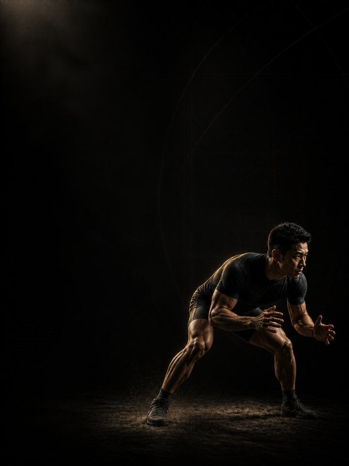

Grappling · Base
Heavy, brief strength work that builds the grip, neck and trunk the mat keeps spending.
- Built forBJJ, wrestling and MMA athletes
- Training days3 gym days a week around your sport, 2 in heavy mat weeks
- Session length48–60 minutes
- Equipmentfull gym, plus a pull-up bar, a sled and a towel
- Formatmobile PDF, every exercise linked to a demo video
- Get all four blocks of this sport family for 119.990 KD (159.960 KD if bought separately).
- Upgrade to 1:1 coaching within 30 days and this price comes off your first month.
The store opens soon. For now, Buy opens an Instagram message and you receive the PDF there.
Who it's for
Grapplers who train their sport hard and want the strength it never gives them. Combat athletes are among the fittest people in any gym and among the most often injured. The usual reason is that the sport is the only training. Six sessions a week of rolling or sparring builds a lot of skill and a lot of fatigue, but almost no maximal strength. That leaves an athlete who works hard while under-built, which is the profile behind most neck, shoulder and low back problems.
This is a strength block. Heavy, low-rep, general work, plus the three things grappling punishes most, grip, neck and trunk, trained on purpose every week.
Where it sits in the year: Block 1 of 4. Base, Build, Compete, Restore, run in order. Base comes first. Run it in a quieter stretch of the calendar, ideally away from a competition.
Your week
Three gym days, arranged around mat time. Lift on the days you train lightest, and never in the two hours before hard sparring.
Off-season, 3 gym days
| Sun | Mon | Tue | Wed | Thu | Fri | Sat |
|---|---|---|---|---|---|---|
| Day 1 | Sport | Day 2 | Sport | Day 3 | Rest | Rest |
In-season, 2 gym days
| Sun | Mon | Tue | Wed | Thu | Fri | Sat |
|---|---|---|---|---|---|---|
| Day 1 | Sport | Day 2 | Rest | Sport | Match | Rest |
In heavy mat weeks, do Day 1 and Day 2 only, and keep the grip and neck work every week whatever the mat schedule looks like.
Every session runs the same way:
- Warm-up, 8–10 min. The same sequence each time. Glutes, hips and shoulders switched on before anything fast.
- Speed and power, 12–15 min, in the phases that include it. Jumps and throws with full recovery. The set stops the moment quality drops.
- Strength, 20–25 min. The heavy compound lifts, with two to three minutes between sets. This is force, not conditioning.
- Tissue work, 8–10 min. Last, and never cut.
The order matters. Speed before fatigue, heavy lifts before assistance, and the tissue work at the end so it survives a rushed session instead of being cut from the middle of one. The gym's job is to make you strong. Your sport already supplies more conditioning than any gym session could.
How the 12 weeks progress
Three phases of four weeks each. Load climbs the whole way, while the work moves from heavy general strength, to power, to strength that holds under fatigue. Grip, neck and trunk work appear in every session.
| Weeks 1–4 | Weeks 5–8 | Weeks 9–12 | |
|---|---|---|---|
| Phase | Maximal strength | Rate of force | Isometric strength |
| Goal | Build maximal, grip and neck strength. Long rests, no supersets. | Heavy, fast lifting. Throws and slams come in. | Heavy work stays, and isometric and grip work extend, because the round does not end when you get tired |
| Working sets per week | 63 | 67 | 68 |
| Average effort | RPE 7.0, about 3 reps in reserve | RPE 8.0, about 2 reps in reserve | RPE 7.9, about 2 reps in reserve |
| Landings per week | 60 | 60 | 60 |
| Throws per week | 0 | 70 | 0 |
RPE is a 1–10 rating of how hard a set feels. Reps in reserve is how many more good reps you could have done, so about 2 means 2 reps left in the tank.
Deload weeks: weeks 6 and 12 are lighter. You halve the sets, keep the loads, and retest fresh.
The rules that make it work
- The gym does not make you tired. Long rests, low reps, no circuits. A session that leaves you unable to train properly the next day was the wrong session.
- Grip and neck run every week. Towel hangs and neck isometrics appear in all twelve weeks. They are what the mat punishes hardest and the gym usually ignores.
- Never train the neck into pain. Gentle self-resistance, held steady, stopped at once if there is pain, dizziness or any symptom into the arm. The neck rewards patience and punishes ambition.
- Lift before you roll, or hours after. No heavy lifting in the two hours before hard sparring. Strength work goes first if they share a day, and never on the day before a competition.
- Body composition is built over months. Weigh in weekly under the same conditions and let the number move slowly. The program does not support rapid weight cutting.
- Use a jump number as a fatigue test. Three standing broad jumps at the start of Day 1 each week, best one kept. More than 10% below your own rolling average means reduce that day: drop the power work and one set from each lift. It takes ninety seconds and catches the week that would otherwise cost a month.
- Count landings, not just sets. Every jump, hop, bound and drop is a landing your tendons pay for, warm-up hops included. Med-ball throws and sprints are not landings. Keep the week under about 120 landings in Base, with sport practice on top.
Terms
- Training year (macrocycle): four blocks in order (Base, Build, Compete, Restore), about 48 weeks.
- Block: 12 weeks. This program. One block develops one set of qualities to a set standard.
- Phase (mesocycle): 4 weeks. Each one targets one quality. Four weeks is a choice, not a rule. The length follows the goal.
- Training week (microcycle): where effort climbs, sets are added and the deload lands.
How you'll measure progress
The weekly broad jump tracks fatigue, and you retest fresh in the deload weeks, 6 and 12.
What good progress looks like
- Weeks 1–4: strength climbs quickly, because most combat athletes have never trained it properly. Expect the grip work to be humbling.
- Weeks 5–8: towel hang and pull-up numbers move fast, and positions feel easier to hold.
- Weeks 9–12: you are harder to move and slower to tire in the same rounds.
The best result is a block with no missed mat time.
Respect the week
Count everything: matches, sport training, gym and sleep. Sudden jumps in weekly workload are the most reliable predictor of injury in amateur sport. In a heavy sport week, drop a gym session or cut the power work, never both the sport and the recovery. Protect 7–9 hours of sleep. It is the most powerful performance tool you have, and the cheapest.
The science
Every program in the library is built on published research, and how strong that research is gets stated, not implied. Where the evidence is limited, the page says so.
| Finding | Source | What it does not show |
|---|---|---|
| Strength training cuts sports injuries to under a third of the control rate. Stretching does not reduce them. | Lauersen, Bertelsen & Andersen, British Journal of Sports Medicine 2014. Meta-analysis of 25 randomised controlled trials, 26,610 participants. PMID 24100287 | Risk ratio 0.32 for strength training and 0.96 for stretching. The trials varied a lot, and dose was not standardised. |
| Programs that include the Nordic hamstring exercise roughly halve hamstring injuries. | van Dyk, Behan & Whiteley, British Journal of Sports Medicine 2019. Meta-analysis, 15 studies, 8,459 athletes. PMID 30808663 | Risk ratio 0.49, or 0.55 with the eight high-risk-of-bias studies removed. It measures programs that include the exercise, not the exercise alone. |
| One adductor exercise, three times a week in pre-season and once a week in season, cut reported groin problems by 41%. | Harøy et al., British Journal of Sports Medicine 2019. Cluster-randomised controlled trial, 35 teams, 652 male footballers. PMID 29891614 | Odds ratio 0.59. Self-reported problems in semi-professional men's football only. It has not been repeated in women or in other sports. |
| Every sensible prescription beats not training. Heavier loads rank highest for strength. Multiple sets rank highest for muscle size. | Currier, McLeod, Banfield et al., British Journal of Sports Medicine 2023. Network meta-analysis, 178 strength and 119 hypertrophy studies. PMID 37414459 | The differences between prescriptions were small, and all of them worked. |
What's next
After 12 weeks:
- Next block in the year: Grappling · Build
- One area needs work: the Corrective series
Want it built around you? One-to-one coaching through the Trainerize app: programming shaped by your goal, schedule and history, video review of your technique, and weekly adjustments. Seats are limited. DM @a_bouzubar with "COACHING".
Before you buy: get cleared first if
- You have chest pain, unusual breathlessness, palpitations or dizziness with exertion.
- You have uncontrolled high blood pressure, a known heart condition, or recent surgery.
- You are pregnant or recently post-partum. Get clearance and a tailored program first.
- You have sharp joint pain in one spot that won't settle. Start with the matching AXIS corrective program.
This program is general fitness guidance. It does not replace a medical assessment.
- Get all four blocks of this sport family for 119.990 KD (159.960 KD if bought separately).
- Upgrade to 1:1 coaching within 30 days and this price comes off your first month.
The store opens soon. For now, Buy opens an Instagram message and you receive the PDF there.